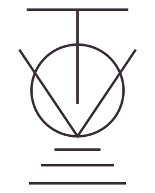

Oar arc, blade length, and catch timing
Android Chrome or desktop Chrome/Edge. Add one pod per oar.
Waiting for another catch vs stroke
| Seat | Hand | Catch | Finish | Arc | Length | Feather Δt | vs stroke | Δ finish | Clock | Drive |
|---|
Mount the pod on the oar shaft inboard of the gate. Pick boat class, then seat and stroke-side vs bow-side, and row. The first stroke centres the fan; catch and finish degrees are estimates (~). Tap Zero (measured) only when you need degrees from a squared perpendicular pose. Type pin-to-blade (outboard) before the piece. Arc is finish minus catch; blade metres use outboard. Feather Δt is the roll after finish vs stroke — blank if the blade never crossed 45° or if feather tracks the fan. In-sync needs two seats with a catch and a finish. iPhone Safari cannot use Web Bluetooth.